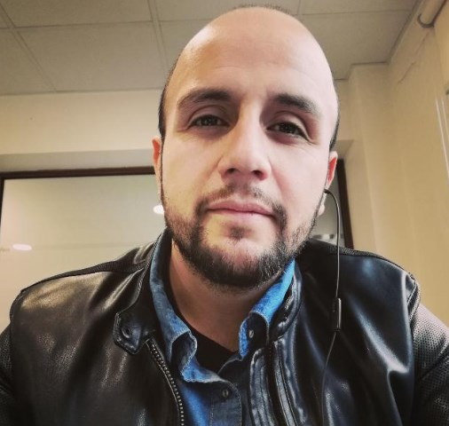

CURRICULUM VITAE

Patricio Sudy
Resumen
Licenciado en educacion con 5 años de experiencia en el rubro.
Titulado de tecnico en adminsitracion de empresas con mencion en recursos humanos.
Trabaje durante 5 años como asesor de clientes venta y postventa.
Actualmente me desempeño desde hace 2 años como tecnico en gestion y control de proyectos de
telecomunicaciones
Datos personales
- Nombre Patricio Andre Sudy Duran
- Nacionalidad chilena
- 34 años de edad
Habilidades
- licenciado en pedagogia
- administrador de empresas
- administrador de recusos humanos
- asesor de clientes venta y postventa
- gestor y controlador de proyectos
Educacion
- Universidad Central de Chile
- Instituto profesional AIEP
- Bootcamp desafio Latam
Fuente
Linkedin
portafolio.html